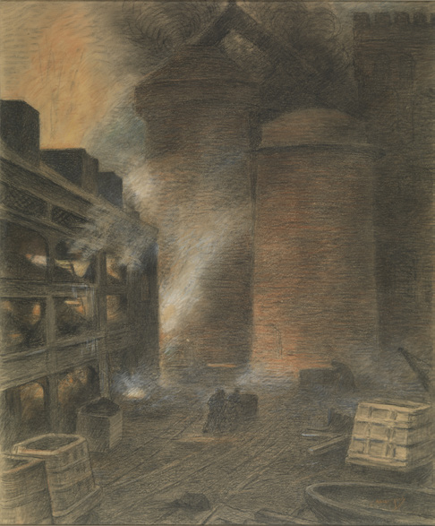

**Constantin Meunier**
*La Descente des mineurs*
MRBAB, inv. 3585
Trois œuvres de Constantin Meunier, aujourd'hui réunies en ce lieu, proviennent d'un même endroit : l'atelier de l'artiste à Bruxelles. Pourtant, chacune de ces œuvres raconte une histoire singulière, un parcours qui les a menées sur des chemins différents avant qu'elles ne soient à nouveau rassemblées ici.
Fin 1902, une **rétrospective** de l'œuvre de Meunier est organisée au Cercle Artistique de Bruxelles. La grande majorité des 120 œuvres exposées sont des sculptures et des reliefs, mais un certain nombre de pastels, de dessins et d'aquarelles font également partie de la sélection. Le succès de cette exposition aboutit à une commande de plusieurs fontes par l'État belge en 1903. Une série impressionnante de onze sculptures en bronze et de deux reliefs est achetée, complétée par une aquarelle et un dessin : *La Descente des mineurs*, l'œuvre exposée ici. En avril 1904, Meunier confirme la livraison des œuvres commandées. Cette série, y compris *La Descente des mineurs*, est présentée au public dans le cadre de la collection des Musées royaux des Beaux-Arts de Belgique. Nous savons par un **catalogue de 1917** que le dessin était exposé au milieu de pastels et de fusains de contemporains tels que Fernand Khnopff, Félicien Rops et Xavier Mellery.

Constantin Meunier Vue d'une fabrique d'acier
Contrairement à *La Descente des mineurs*, *Vue d'une fabrique d'acier*, ainsi qu'une esquisse préparatoire, *Une Fabrique d'acier*, sont restées en possession de Constantin Meunier après leur création. À sa mort en 1905, la collection passe aux mains de sa fille et de son gendre. Ils transforment son atelier en musée, un lieu de mémoire en l'honneur de l'artiste, et se consacrent à la diffusion de son œuvre dans le monde. Cet atelier-musée est à l'origine de **nombreuses expositions en Belgique et à l'étranger**. Une exposition itinérante en Allemagne en 1906, organisée par les marchands d'art Keller & Reiner, connaît un grand succès. En 1913, une partie importante de la collection, dont *Vue d'une fabrique d'acier*, traverse l'Atlantique pour une ambitieuse tournée aux États-Unis, où les œuvres sont présentées dans six lieux différents sur une période de six mois. Entre deux expositions, le dessin peut être admiré du public dans l'ancien atelier de Meunier, où il est entouré de nombreux dessins, de peintures et d'esquisses. En 1936, la maison de Meunier est achetée par l'État belge. Trois ans plus tard, elle ouvre officiellement ses portes en tant que Musée Constantin Meunier, une section des MRBAB. *Vue d'une fabrique d'acier* y est restée jusqu'à son transfert aux MRBAB en 2020.
Constantin Meunier Une fabrique d'acier
Bien que les œuvres aient passé la majeure partie de leur histoire séparées, elles se sont occasionnellement "retrouvées" lors d'expositions. *Belgian Art, 1880-1914*, organisée au Brooklyn Museum de New York en 1980, en est un bel exemple. Cette exposition avait réuni les deux œuvres pour la première fois depuis des décennies, offrant une occasion unique de découvrir les trajectoires différentes de ces créations pourtant issues du même atelier. Aujourd'hui, ici dans cette salle, elles sont à nouveau réunies.
Belgian Art, 1880-1914
*Crédits photos : © MRBAB, Bruxelles / photo : J. Geleyns - Art Photography | © Records of the Department of Photography, The Brooklyn Museum Archives*
**Constantin Meunier**
*Afdalende mijnwerkers*
KMSKB, inv. 3585
Drie werken van Constantin Meunier, vandaag de dag verenigd in de museumverzameling, vinden hun oorsprong op dezelfde plek: het atelier van de kunstenaar in Brussel. Toch vertelt elk van deze werken een uniek verhaal, een reis die hen langs verschillende wegen heeft geleid alvorens ze hier opnieuw samenkwamen.
Aan het einde van 1902 werd er bij de Brusselse Cercle Artistique een **solotentoonstelling** met het werk van Meunier georganiseerd. Het overgrote deel van de 120 getoonde werken waren sculpturen en reliëfs, maar ook een aantal pastels, tekeningen en aquarellen maakten deel uit van de presentatie. Het succes van deze expositie leidde in 1903 tot een bestelling van enkele afgietsels door de Belgische staat. Een indrukwekkende reeks van elf bronzen beelden en twee reliëfs werd aangekocht, aangevuld met een aquarel en een tekening: *Afdalende mijnwerkers*, het werk dat hier te zien is. In april 1904 bevestigde Meunier de levering van de bestelde kunstwerken. De aangekochte werken waaronder ook *Afdalende mijnwerkers*, werd als deel van de collectie van de Koninklijke Musea voor Schone Kunsten van België (KMSKB) aan het publiek getoond. Een catalogus uit 1917 leert ons dat de tekening geëxposeerd werd te midden van pastel- en houtskooltekeningen van tijdgenoten als Fernand Khnopff, Félicien Rops en Xavier Mellery.
Constantin Meunier Gezicht op een staalfabriek
In tegenstelling tot *Afdalende mijnwerkers*, bleef *Gezicht op een staalfabriek* samen met een voorbereidende schets, *Een staalfabriek*, in het bezit van Constantin Meunier zelf. Na zijn overlijden in 1905 kwamen zijn nagelaten werken in handen van zijn dochter en schoonzoon. Zij transformeerden zijn atelier tot een museum, een *lieu de mémoire* ter ere van de kunstenaar, en zetten zich in om zijn nalatenschap wereldkundig te maken. Het atelier-museum werd de uitvalsbasis voor **talrijke tentoonstellingen in binnen- en buitenland**. Een rondreizende tentoonstelling in Duitsland in 1906, georganiseerd door kunsthandelaars Keller & Reiner, kende een groot succes. In 1913 stak een aanzienlijk deel van de collectie, waaronder ook *Gezicht op een staalfabriek*, de Atlantische Oceaan over voor een ambitieuze rondreis door de Verenigde Staten, waar de werken gedurende zes maanden op zes verschillende locaties werden getoond. Tussen de talrijke tentoonstellingen door vond het werk zijn plek in het voormalige atelier van Meunier, waar het, te midden van een overvloed aan tekeningen, schilderijen en schetsen, door het publiek bewonderd kon worden. In 1936 werd het huis van Meunier aangekocht door de Belgische staat. Drie jaar later opende het officieel als het Constantin Meunier Museum, een onderdeel van de KMSKB. *Gezicht op een staalfabriek* bleef hier bewaard tot het in 2020 naar de reserves van de KMSKB verhuisde.
Constantin Meunier Een staalfabriek
Hoewel de werken het grootste deel van hun geschiedenis gescheiden van elkaar doorbrachten, 'ontmoetten' ze elkaar occasioneel op tentoonstellingen. Een treffend voorbeeld hiervan is de expo *Belgian Art, 1880-1914* in het Brooklyn Museum in New York in 1980. Deze tentoonstelling bracht de twee werken, na decennia van gescheiden omzwervingen, opnieuw samen en bood een unieke kans om de verschillende verhalen achter deze werken uit hetzelfde atelier te ontdekken. Vandaag, hier in deze zaal, vinden ze elkaar opnieuw.
Belgian Art, 1880-1914
*Fotocredits: © KMSKB, Brussel / foto: J. Geleyns - Art Photography | © Records of the Department of Photography, The Brooklyn Museum Archives*
**Constantin Meunier**
*Descending Miners*
RMFAB, inv. 3585
Three works by Constantin Meunier, reunited in this location today, originate from the same place: the artist's studio in Brussels. Yet each of these works tells a unique story, a journey that has led them along different paths before they were brought together again here.
At the end of 1902, a **solo exhibition** of Meunier's oeuvre was organised at the Cercle Artistique in Brussels. The vast majority of the 120 works on display were sculptures and reliefs, but a number of pastels, drawings, and watercolours were also part of the presentation. The success of this exhibition led to a commission for several casts by the Belgian state in 1903. An impressive series of eleven bronze sculptures and two reliefs was purchased, supplemented by a watercolour and one drawing: *Descending Miners*, the work on display here. In April 1904, Meunier confirmed the delivery of the commissioned artworks. This series, including *Descending Miners*, was displayed to the public as part of the collection of the Royal Museums of Fine Arts of Belgium (RMFAB). We know from a **1917 catalogue** that the drawing was exhibited amidst pastel and charcoal drawings by contemporaries such as Fernand Khnopff, Félicien Rops, and Xavier Mellery.
Constantin Meunier View of a Steel Mill
In contrast to *Descending Miners*, *View of a Steel Mill*, along with a preparatory sketch, *A Steel Mill*, remained in the possession of Constantin Meunier himself after their creation. After his death in 1905, the collection passed into the hands of his daughter and son-in-law. They transformed his studio into a museum, a *lieu de mémoire* in honour of the artist, and dedicated themselves to sharing his legacy with the world. The studio-museum became the base for **numerous exhibitions both at home and abroad**. A travelling exhibition in Germany in 1906, organised by the art dealers Keller & Reiner, was a great success. In 1913, a significant part of the collection, including *View of a Steel Mill*, crossed the Atlantic for an ambitious tour of the United States, where the works were shown at six different locations over a period of six months. In between the numerous exhibitions, the drawing found its place in Meunier's former studio, where it could be admired by the public amidst an abundance of drawings, paintings, and sketches. In 1936 Meunier's house was purchased by the Belgian state. Three years later, it officially opened as the Constantin Meunier Museum, a part of the RMFAB. *View of a Steel Mill* remained there until it was moved to the RMFAB in 2020.
Constantin Meunier A Steel Mill
Although the works spent most of their history apart, they occasionally "met" at exhibitions. A striking example of this is the *Belgian Art, 1880-1914* exhibition at the Brooklyn Museum in New York in 1980. This exhibition brought the two works together again after decades of separate journeys, offering a unique opportunity to discover the different stories behind these works from the same studio. Today, here in this room, they are reunited once more.
Belgian Art, 1880-1914
*Photo credits: © RMFAB, Brussels / photo: J. Geleyns - Art Photography | © Records of the Department of Photography, The Brooklyn Museum Archives*